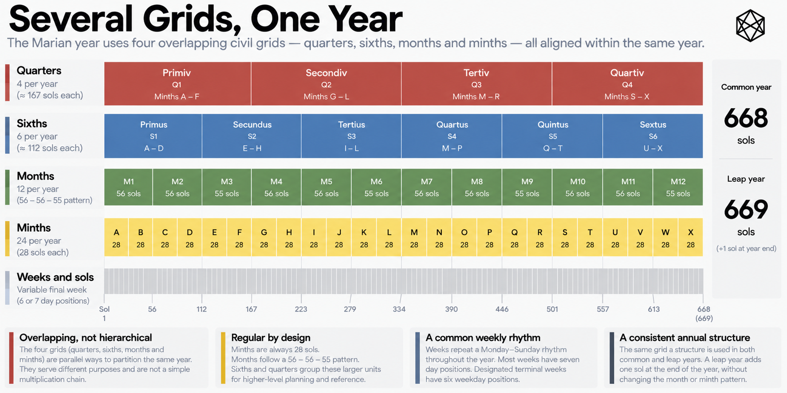
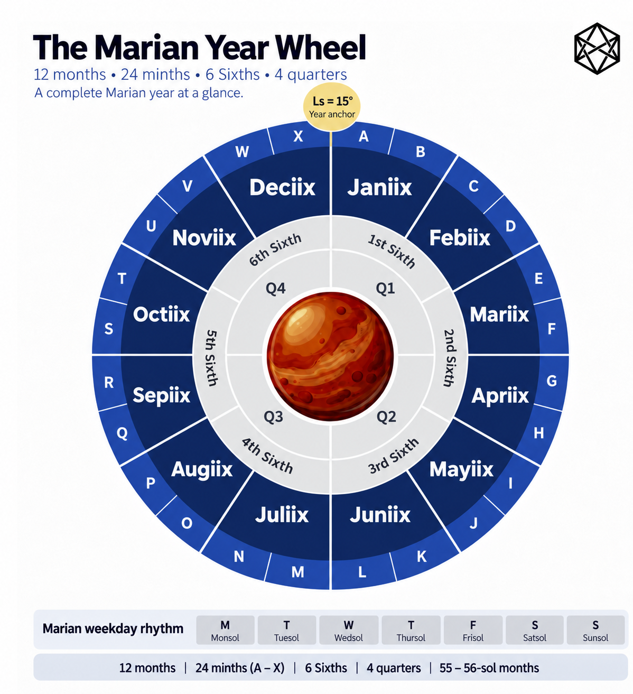

OVERVIEW
10) The Year in One View
The Marian Architecture
Marian is built around one governing principle: do not make one mechanism perform two jobs merely because history once bundled them together. Chapter 3 encountered that idea as Functional Separation in the terrestrial calendar. Mars makes it operational. Relationships that happen to coexist comfortably on Earth pull apart, and Marian's response is not simply to choose one function and abandon the other. It gives different functions appropriate places within the same civil system.
The result is easiest to understand as a picture rather than as a sequence of rules. At the bottom is the sol, the ordinary Martian civil day. Above it sits a nominal seven-position week. Roughly four week positions form a minth, two minths form a month, and twelve months span the Martian civil year. So far, that sounds like an ordinary hierarchy. It is not.
Above the month, Marian divides the year in two different ways at once. Three months form one of four quarters, while two months form one of six Sixths. Quarters and Sixths therefore overlap. They are not successive rungs of a single ladder, and some of their boundaries deliberately cross one another.
That is not an awkward side effect of the architecture. It is the architecture.
The complete system can be summarised as:
1 Marian year = 4 quarters = 6 Sixths = 12 months = 24 minths = 96 nominal week positions = 668 or 669 sols

Detailed figure description
A stacked horizontal breakdown shows the Marian annual template at successive scales: one 668-sol common year and the 669-sol leap variant, twelve months, paired minths, recurring civil weeks, and longer annual groupings. Colored bands run across the same time axis to show how the parts relate. The lower explanatory boxes discuss the fact that the calendar has overlapping civil views rather than one perfect hierarchy. Read Chapter 10 and Appendix B for authoritative numerical lengths.
Editorial note: this is a descriptive summary, not an independently verified transcription of every diagram label. Refer to the surrounding text and the Marian technical specification for authoritative numeric details where applicable.
Those equal signs describe different ways of partitioning and navigating the same Martian year. They are not one continuous multiplication chain.
The year on one page
In a common year, Marian's twelve months follow one repeated pattern:
56 – 56 – 55 | 56 – 56 – 55 | 56 – 56 – 55 | 56 – 56 – 55
Every group of three months contains 167 sols:
56 + 56 + 55 = 167
Four such groups make the common year:
4 × 167 = 668 sols
The same twelve months are also grouped in pairs to make six Sixths. Every month contains two minths, producing twenty-four across the year. A 56-sol month divides into two 28-sol minths; a 55-sol month divides into one of 28 and one of 27.
The whole common-year structure can therefore be seen in one table:
| Month | Length | Quarter | Sixth | Minths |
|---|---|---|---|---|
| 1 | 56 | Q1 | S1 | 01–02 |
| 2 | 56 | Q1 | S1 | 03–04 |
| 3 | 55 | Q1 | S2 | 05–06 |
| 4 | 56 | Q2 | S2 | 07–08 |
| 5 | 56 | Q2 | S3 | 09–10 |
| 6 | 55 | Q2 | S3 | 11–12 |
| 7 | 56 | Q3 | S4 | 13–14 |
| 8 | 56 | Q3 | S4 | 15–16 |
| 9 | 55 | Q3 | S5 | 17–18 |
| 10 | 56 | Q4 | S5 | 19–20 |
| 11 | 56 | Q4 | S6 | 21–22 |
| 12 | 55 | Q4 | S6 | 23–24 |
Most of Marian is already visible here. Quarters divide the year 3 + 3 + 3 + 3. Sixths divide it 2 + 2 + 2 + 2 + 2 + 2. Every month contains two minths. The nominal week supplies the shorter recurring civil pattern beneath them, while the sol remains the physical unit underneath everything.
The important point is not simply that Marian contains several scales. It is that those scales are composed differently because they do different work.
Not a ladder
The familiar terrestrial calendar encourages us to picture civil time as a ladder:
day → week → month → quarter → year
That image is useful until it becomes misleading. Weeks already refuse to fit neatly inside Gregorian months, because they represent a different form of recurrence. Marian extends the same idea further.
The lower levels of the calendar still nest reasonably cleanly. Sols occupy weekday positions; minths sit inside months; months sit inside the year. But the annual structure above the month is deliberately plural. A quarter groups three months, while a Sixth groups two. Quarter 1 therefore contains Months 1, 2 and 3. Sixth 1 contains Months 1 and 2, while Sixth 2 contains Months 3 and 4. Sixth 2 begins inside Quarter 1 and ends inside Quarter 2.
There is nothing intrinsically defective about that. Quarters and Sixths are not attempting to describe the same relationship. Requiring them to nest perfectly would produce a tidier diagram while defeating the reason for having both.
Marian is therefore better understood as several grids laid across one annual cycle. One grid provides twelve annual positions, another twenty-four shorter divisions, another six medium divisions and another four broad annual fractions. The weekday pattern runs beneath them, just as terrestrial weeks run beneath Gregorian months without seeking permission from either January or February.
The architecture is not trying to produce the neatest possible family tree of units. It is trying to provide a small set of useful civil coordinates that can coexist without pretending they form one natural hierarchy.
Seven scales in one system

Detailed figure description
A concentric circular year wheel places Mars at the center, with twelve named Marian months around the perimeter. Twenty-four alphabetically identified minth positions are arranged on the outer ring, two per month. Colored quarter sectors group three consecutive months at a time. A small lower strip gives a weekday rhythm legend. The wheel is an annual navigation aid rather than a map of true orbital angular movement.
Editorial note: this is a descriptive summary, not an independently verified transcription of every diagram label. Refer to the surrounding text and the Marian technical specification for authoritative numeric details where applicable.
The resulting calendar contains seven principal civil scales. The sol is the Martian civil day. The nominal seven-position week provides the shortest recurring civil rhythm. The minth divides the year into twenty-four periods of 27 or 28 sols, while the month divides it into twelve periods of 55 or 56. The Sixth groups two months, the quarter groups three, and the year provides the complete annual frame.
Their structure can be summarised as:
| Scale | Typical size | Primary role |
|---|---|---|
| Sol | 1 sol | Daily civil life |
| Week | 7 nominal positions | Short recurring rhythm |
| Minth | 27–28 sols | Short operating cadence |
| Month | 55–56 sols | Twelve-part annual orientation |
| Sixth | 111–112 sols | Medium-range interval |
| Quarter | 167 sols in a common year | Four-part annual position |
| Year | 668–669 sols | Martian annual civil frame |
Those roles will be examined properly in the next chapter. For the moment, the architectural fact is the important one: one Martian year carries several civil grids at once.
This is what distinguishes Marian from a conventional hierarchy. A date can simultaneously occupy a weekday position, a minth, a month, a Sixth, a quarter and a year without those units needing to form a single chain of ever-larger boxes. They are different coordinates on the same civil landscape.
One repeating rule
For a system containing several overlapping scales, the underlying common-year arithmetic is surprisingly compact. The month pattern is simply:
56 – 56 – 55, repeated four times
That one rule reconstructs every month length in the common year. Months 3, 6, 9 and 12 are the shortened 55-sol months, placing one at the end of each quarter. Every common-year quarter therefore contains the same 167-sol pattern.
The minth structure follows automatically. Each 56-sol month divides as:
28 + 28
and each 55-sol month as:
28 + 27
The Sixths require no independent rule either; they emerge by pairing consecutive months. The quarters emerge by grouping months in threes. Several visible civil scales therefore sit on top of a very small amount of underlying arithmetic.
This is an important characteristic of Marian. The calendar does not seek uniformity by making every period identical. Its irregularities are small, repeated and deterministic. The richer architecture is produced by recombining a simple underlying pattern rather than by adding a separate set of rules for every scale.
Only two annual templates
A leap year contains 669 sols rather than 668, and at the architectural level the difference is confined to the final position of the year. Month 12 grows from 55 to 56 sols. That additional sol completes its final seven-position civil week, extends Minth 24 from 27 to 28 sols, increases Sixth 6 from 111 to 112, and makes Quarter 4 168 rather than 167 sols.
Everything before that point remains unchanged. Marian therefore requires only two complete annual templates:
Common year — 668 sols
Leap year — 669 sols
The rule deciding which years take which form, and the astronomical reasoning behind that rule, belong to the Intercalation layer considered later. Structurally, the important point is simpler: a leap year does not redesign Marian. It fills one final position.
That concentration matters because it keeps the architecture stable. The same months, minths, Sixths, quarters and weekday positions exist in the same order every year. Only one possible terminal civil position distinguishes the two templates.
Composition is the architecture
Seen individually, relatively little in Marian is radical. The Martian sol is established. Seven-position weeks have obvious terrestrial ancestry. Martian calendars using approximately four-week periods have substantial precedent, as do twelve-month systems built from 55- and 56-sol months. Quarters are simple annual fractions, while pairing or grouping months hardly constitutes mathematical rebellion.
The distinctive feature appears when those pieces are composed. Marian does not require every useful civil rhythm to occupy one nested sequence. It allows twenty-four shorter periods and twelve annual positions to coexist; it overlays four quarters with six Sixths; it lets the weekly pattern supply recurrence beneath both; and it ties the resulting structure to one Martian annual frame.
That is Functional Separation expressed as architecture. The point is not to multiply units for their own sake, nor to insist that every function deserves a separate mechanism. It is to recognise when inherited combinations have stopped serving their different purposes well, separate them where necessary, and then recombine the resulting parts into a coherent whole.
That is why the canonical principle matters:
Do not make one mechanism perform two jobs merely because history once bundled them together.
On Mars, applying that principle sometimes produces two scales where Earth comfortably uses one. Elsewhere it produces two grids crossing the same annual cycle. The apparent complexity is therefore not a collection of independent embellishments. It is the visible consequence of assigning different jobs deliberately and then allowing the resulting structures to coexist.
Most individual pieces have precedent. The distinctive move is their composition.